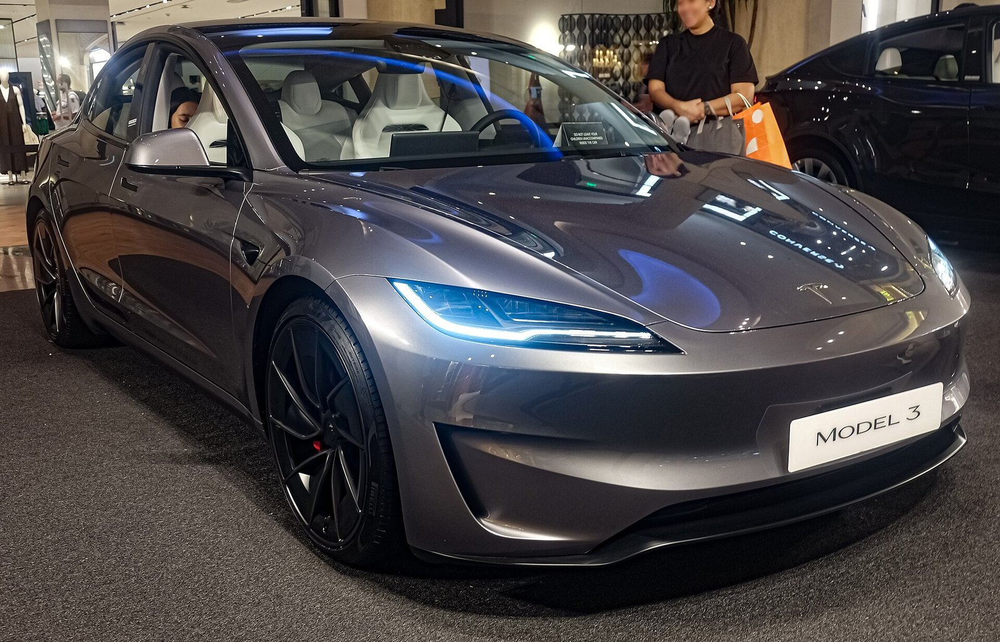

Software
Halloween Mode, Optimus hand
Graveyard on the centre screen, car under a bedsheet, a robot hand out of the dirt. Looks a lot like the new Optimus hand if you ask me.
Tesla
Supervised driving, European approvals, Terafab, and Grok Bot in the cabin.

8 of 27 EU countries have recognised the Dutch RDW approval. Track every state, the path to 15 votes and 65% population, and what Germany still holds.

Model 3, Y, S, X and Cybertruck — who each one is for, how they drive, and what you give up. Independent notes, not a brochure.
Tesla Europe posted Supervised driving through Swiss snow. This is the clip the Nordics keep asking for.
Graveyard on the centre screen, car under a bedsheet, a robot hand out of the dirt. Looks a lot like the new Optimus hand if you ask me.

We can already schedule preconditioning by time. The winter update I want: only fire it if the outside temperature actually needs it.
Europe
Germany is about 19% of the EU’s population — more than all eight countries that have already approved FSD Supervised, combined. When Berlin moves, the EU-wide vote math moves with it.
Ireland
Tesla says FSD is finally learning to dodge potholes. When it lands on Irish roads that is the final boss — not a mountain pass, a crater on a regional road with oncoming traffic and a bus that will not move.
One of Tesla’s top AI engineers told an owner this week that improvements are coming for both potholes and dodgy navigation. I will believe it when Beast takes the N-road without flinching.
Chips
Elon is in talks with TSMC about making chips in Texas. Terafab is the $16.8 billion plant Tesla and SpaceX are building in Grimes County. The Austin plan tops out at a million wafer starts a month — roughly 70% of everything TSMC makes today, from a site none of these companies has ever run.
If TSMC actually operates it, that is a bigger deal than any trim or colour this year. I posted it that way because that is how it reads from the shareholder seat.
In the car
You can link Grok Bot to the car through Tesla developer options. Ten minutes before the drive home it can check the weather and, depending on the temperature, warm the cabin, the wheel, the glass — or cool it if the sun has been sitting on Beast all day.
That is not a concept video. That is one of the bots I actually run. The longer version lives on the Grok desk.